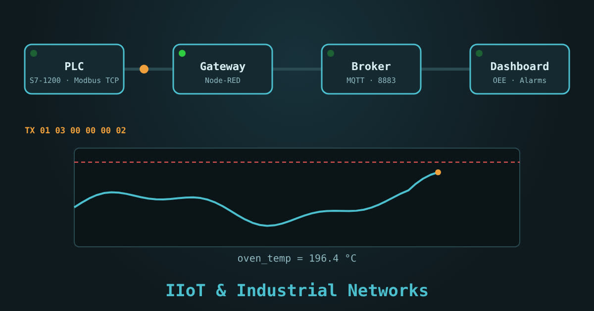

كورس · 14 درس · محاكي من 11 تمرينبالعربية الفصحى
كورس إنترنت الأشياء الصناعي والشبكات الصناعية
كل الشبكات اللي بتتكلم بيها الأجهزة في المصنع، من الكابل وعنوان IP لحد الداشبورد على موبايلك: Modbus و PROFIBUS و PROFINET و CAN و DeviceNet و OPC UA و MQTT، وبعدها إزاي تلاقي العطل في أي شبكة بمنهج منظم.
الدرس الأول مفتوح للكل، والمحاكي بيتفتح مع الكورس

المحتوى
14 درس بالترتيب، كل درس وراه تمرين على المحاكي
الدروس مكتوبة بالعربية الفصحى، بأرقام وأكواد وإطارات مطابقة للمواصفات الرسمية. كل درس فيه أسئلة، وآخر درس فيه الامتحان النهائي.
- ما هو إنترنت الأشياء الصناعي والشبكات الصناعية؟مفتوح للكل
- المصنع يتكلم، لكن بلغات مختلفة
- ثلاث عائلات من الشبكات
- ماذا يحتاج فني الصيانة أن يعرفه؟
- مصطلحات ستتكرر
- خريطة الكورس على المحاكي
- محاكيافتح المحاكي وتعرّف على التبويبات فقط…
- أسئلةأسئلة الدرس
- أساسيات شبكة الإيثرنت: IP و Subnet و Switch
- الكابل والمنفذ والمصابيح
- عنوان MAC وعنوان IP
- ثابت أم DHCP؟
- الأخطاء الأربعة الشائعة
- أداتك الأولى: ping و arp
- محاكياضبط عنوان حاسوبك المحمول يدويًا في الشبكة الفرعية…
- أسئلةأسئلة الدرس
- RS-485 و Modbus RTU
- لماذا RS-485؟
- التوصيل الصحيح
- إعدادات المنفذ التسلسلي
- السجلات ورموز الوظائف
- شكل الإطار على الخط
- مثال: قراءة محوّل تردد والتحكم فيه
- محاكياضبط منفذ السيد ليطابق محوّل التردد…
- أسئلةأسئلة الدرس
- Modbus TCP
- الفكرة نفسها على الإيثرنت
- رأس MBAP
- قراءة PLC من الحاسوب
- الأداء والحدود
- بوابة Modbus TCP ⇄ RTU
- محاكياتصل بالـ PLC على 502…
- أسئلةأسئلة الدرس
- PROFIBUS DP
- ما هو PROFIBUS DP؟
- الموصّل والكابل والإنهاء
- العنوان وملف GSD
- المصابيح والتشخيص
- التفكير في عطل PROFIBUS
- محاكياضبط عناوين المحطات الأربع لتطابق المشروع…
- أسئلةأسئلة الدرس
- PROFINET
- من PROFIBUS إلى PROFINET
- الاسم أولًا، ثم IP
- الطوبولوجيا والمفاتيح
- المصابيح والتشخيص
- أخطاء PROFINET الشائعة
- محاكياضبط اسم كل جهاز ليطابق المشروع…
- أسئلةأسئلة الدرس
- CAN bus و CANopen و DeviceNet
- كيف يعمل CAN؟
- الطول والسرعة والإنهاء
- CANopen: المعرّفات والكائنات
- DeviceNet: الفرق المهم
- التفكير في عطل CAN
- محاكيشاهد التحكيم بين رسالتين…
- أسئلةأسئلة الدرس
- EtherNet/IP و AS-i و IO-Link و HART
- EtherNet/IP و CIP
- AS-Interface: الكابل الأصفر
- IO-Link: الحساس الذكي
- HART: رقمي فوق 4-20 mA
- جدول المقارنة الكبير
- أسئلةأسئلة الدرس
- OPC UA
- لماذا OPC UA؟
- فضاء العناوين و NodeId
- الاشتراك بدل الاستطلاع
- الأمان: الشهادات والسياسات
- OPC UA على S7-1500 خطوة بخطوة
- محاكيتصفح شجرة الخادم حتى متغيرات خط الإنتاج…
- أسئلةأسئلة الدرس
- MQTT
- النشر والاشتراك
- المواضيع والأحرف البديلة
- QoS و Retain و Last Will
- Sparkplug B: MQTT بنظام
- أمثلة عملية
- محاكيانشر قراءات من الحساسات، اشترك بأحرف بديلة…
- أسئلةأسئلة الدرس
- البوابة: من الـ PLC إلى السحابة
- ما البوابة ولماذا نحتاجها؟
- تدفق Node-RED نموذجي
- التخزين المؤقت وعدم الاتصال
- أمن البوابة
- محاكيفي تبويب البوابة اربط عقدة Modbus بعقدة التحويل…
- أسئلةأسئلة الدرس
- لوحة المتابعة والاتجاهات والإنذارات
- من الرسالة إلى الرسم البياني
- إنذار جيد وإنذار سيئ
- OEE: الرقم الذي يفهمه المدير
- تصميم لوحة لا تُربك
- محاكيفي تبويب لوحة المتابعة اضبط حد الإنذار والتأخير…
- أسئلةأسئلة الدرس
- الصيانة التنبؤية
- ثلاثة أنواع من الصيانة
- ما الذي تقيسه؟
- من القياس إلى القرار
- مثال: مضخة التبريد
- محاكيفي تبويب لوحة المتابعة اختر منحنى الاهتزاز…
- أسئلةأسئلة الدرس
- تشخيص أعطال الشبكات ومشروع خط إنتاج والامتحان النهائي
- منهج التشخيص: من الأسفل إلى الأعلى
- عُدّة التشخيص
- عشر حالات ستقابلها
- مشروع الخط الكامل
- محاكيفي تبويب الأعطال شغّل المشروع…
- أسئلةأسئلة الدرس
- امتحانالامتحان النهائي
الكورس بالأرقام
16شبكة وبروتوكول صناعي بتتعلمهم
11تمرين تفاعلي في محاكي الشبكات
8أعطال حقيقية في مشروع خط التعبئة
12سؤال في الامتحان النهائي وشهادة إتمام
IIoT
إنت هتتعلّم إيه
- تظبط عناوين IP والـ Subnet وتفهم الـ Switch والـ VLAN وليه ping بينجح والبروتوكول بيفشل
- تبعت طلب Modbus RTU بايت بايت بالـ CRC، وتقرأ انفرتر وعداد طاقة على RS-485 بإنهاء صح
- تقرأ وتكتب Modbus TCP من PLC، وتفهم الـ MBAP والـ Exception codes
- تصلّح عناوين PROFIBUS وملفات GSD، وتدي اسم لجهاز PROFINET جديد بـ DCP
- تفهم تحكيم CAN وتفرق بين CANopen و DeviceNet و EtherNet/IP و EtherCAT
- تعرف AS-i و IO-Link و HART وإمتى تستخدم كل واحد
- تتصل بخادم OPC UA بشهادة، وتنشر وتشترك على وسيط MQTT بـ QoS و Retain و Last Will
- تبني بوابة Node-RED من الـ PLC للسحابة، ولوحة متابعة بإنذارات ما بتكدبش و OEE
- تقرأ اتجاه الاهتزاز وتتوقع عطل الكرسي قبل ما يحصل (الصيانة التنبؤية)
- تشخّص عطل أي شبكة صناعية طبقة طبقة بـ Wireshark و PRONETA والأوميتر
المحاكي
محاكي الشبكات الصناعية: 11 تمرين
كل تمرين مرتبط بدرس، وإتمامه بيتسجّل في تقدّمك.
- عناوين IPأربع أجهزة فيهم عنوان مكرر وجهاز في شبكة تانية: ظبّطهم وجرّب ping
- Modbus RTUإنهاء وسرعة وتماثل، وطلب ورد بالبايتات والـ CRC وأكواد الـ Exception
- Modbus TCPاقرأ الحرارة واكتب نقطة ضبط في PLC، وشوف الـ MBAP
- PROFIBUS DPعناوين على القرص وملفات GSD وإنهاء في الطرفين
- PROFINETجهاز اتبدّل واسمه ضاع: ادّيله اسمه بـ DCP وشوف PRONETA
- CAN busتلات عقد بيبعتوا في نفس اللحظة: مين يفوز؟ وقيس الإنهاء 60 Ω
- OPC UAشهادة وسياسة أمان، وتصفّح وقراءة واشتراك
- MQTTنشر واشتراك بـ + و #، و Retain و Last Will
- بوابة Node-REDوصّل Modbus بـ Function بـ MQTT وطلّع JSON صح
- لوحة المتابعةإنذار بحد وتأخير وتباطؤ، وحساب OEE، وتوقّع عبور الاهتزاز لحد ISO
- مشروع خط التعبئةتلات أعطال مخفية من 8 في طبقات مختلفة: لاقيهم بالأداة الصح وصلّحهم
لمين
مين الكورس ده ليه
- لمهندسين وفنيين الصيانة اللي بيقابلوا كابلات Modbus و PROFIBUS و PROFINET كل يوم
- لمبرمجين الـ PLC اللي عايزين يوصّلوا الماكينة بالسحابة
- لمهندسين الـ IT اللي داخلين على المصانع ومحتاجين يفهموا الـ OT
- بعد كورس الـ PLC، ومش محتاج خلفية في الشبكات
أسئلة بتتكرر
قبل ما تسأل
محتاج أجهزة أو برامج؟
لا. كل التمارين على المحاكي في المتصفح، من الموبايل أو الكمبيوتر. ولما تيجي تطبّق على شبكة حقيقية هتعرف إيه البرامج المجانية اللي تحمّلها (Wireshark و PRONETA و MQTT Explorer و UaExpert).
ليه الكورس بالفصحى؟
عشان المصطلحات الفنية تبقى دقيقة وتنفع في أي بلد عربي، والأكواد والإطارات والأرقام زي ما هي في المواصفات الرسمية.
بيغطي شبكة إيه بالظبط؟
TCP/IP و RS-485 و Modbus RTU و Modbus TCP و PROFIBUS DP و PROFINET و CAN و CANopen و DeviceNet و EtherNet/IP و EtherCAT و AS-i و IO-Link و HART و OPC UA و MQTT، وبوابة Node-RED.
محتاج حساب؟
الدرس الأول مفتوح للكل. باقي الدروس والمحاكي والشهادة بيتفتحوا لما تشتري الكورس، وتقدّمك بيتحفظ على حسابك.
فيه شهادة؟
آه، شهادة إتمام من LearnElectricals لما تخلّص الدروس والتمارين وتنجح في الامتحان النهائي بـ 80%.
جاهز توصّل الماكينة بالسحابة؟
الدرس الأول مفتوح للكل، والكورس كله بالمحاكي بيتفتح لما تشتريه. ادخل دلوقتي وكمّل على راحتك، وتقدّمك بيتحفظ.